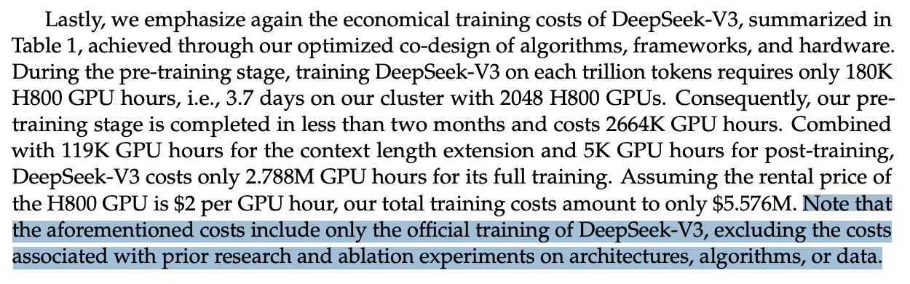

V3 Training Fermi Estimate
Table of Contents
Deepseek-V3 Training Budget Fermi Estimation
What Is The Actual Claim?
There are a variety of opinions floating around about the validity of the table in the Deepseek-V3 paper, which claims that the model was trained on a budget of $5.5 Million USD. Some people are going so far as to call it an outright lie, or some sort of psyop to make American labs chase an impossible target.
For one, I suspect a lot of people are talking past each other with respect to conversations about how much it cost to train Deepseek-V3. More directly: I think tabooing your words does a lot to make conversation on this topic more clear. A number of people are very convinced, but I think the papers released by Deepseek contain enough detail where you can just look at the paper and make some rough estimates, which ground the conversation in some sense of actual reality.
Let’s reframe the convo: the figure from the V3 paper is that they trained it using 2.788M H800 GPU hours. At $2 per GPU hour, that comes out to $5.576M. The cost of 2048 H800s is much higher than $5 million, and obviously this figure includes nothing about research, salary, failed training runs, paying the janitor to clean the desks at the office, or whatever. The claim of the paper is that 2.788M GPU hours costs $5.5 million, which is more like the amount of money they would have made just renting the GPUs out for $2 per hour instead of training it. I think it’s more productive to cast the dollar figure completely away here: the claim is that they were able to train a Deepseek-V3 architecture on 14.8 trillion tokens using 2788k GPU hours. We will focus entirely upon this figure instead, since it’s one we can actually look at and analyze.

Estimating FLOPs
It would be helpful to start with a quick summary on what floating point operations, or "FLOPs" are. These are an important way to measure computing performance. Modern GPUs are good at manipulating floats in different formats, which make them useful for different ML applications. Because we know how many parameters are active in the forward and backward passes, and they told us how many tokens they trained on, we can estimate how long it should take by starting with the total number of floating point operations were used.
First, it’s helpful to have a reference point for what “normal” would look like for this many tokens. Llama 3.1 405B took Meta a reported 30.84M GPU hours, and they trained on a very similar 15 trillion tokens. That was a dense, 405B model trained in full bf16, for which they report about 40% utilization. Let’s maybe start there. Deepseek-V3 has 671B total parameters, but since it’s an MoE, it only activates 37B for each forward and backward pass. To start with something very simple, let’s just pretend for now that this is a 37B dense model that we want to train on 14.8T tokens. If we were Meta, how much would that cost us?
Llama 3 did 15 trillion tokens in 30.84M GPU hours. They report 3.8e25 FLOPs in training, which checks out with the rule-of-thumb of \(6 * \text{parameters} * \text{tokens}\), \((15T * 405B * 6 = 3.65e25 \text{ FLOPs})\). In comparison, Deepseek-V3 has 37B active, which is about 9.1% of the active size of 405B. \(6 * 37B * 14.8T\) lands us at \(3.29e24\) FLOPs in training, which is pretty close to what you would get from \(3.8e25 * \frac{14.8}{15} * 0.091 = 3.41e24\). We can cross-reference this with the figures for Deepseek-MoE: in that work, DeepSeekMoE is 145B total, 22.2B active, and reports 585.6T flops per 4k tokens. \(\frac{585.6T \text{ flops}}{4000 \text{ tokens}} * \frac{1}{22.2B \text{ parameters}} = 6.59\) flops per token per active parameter, and \(6.59 \text{ flops} * 14.8T \text{ tokens} * 37B \text{ active params} = 3.61e24\) flops total for Deepseek-V3. This is not so far off from our estimate, so it's probably reasonable.
Per the same usage as llama 3 \((30.84M / 3.8e25) * 3.29e24\), this should take \(2.67M\) GPU hours. This is very close to the reported figure of 2.788M GPU hours, which is super helpful in helping us understand what the actual claim of the Deepseek-V3 paper is. In essence, the claim here is that the improvement over llama 3's training infrastructure is roughly equivalent to the additional overhead added by mixture-of-experts plus the additional overhead added by using H800s instead of H100s. How ridiculous is this claim?
Additional Overhead from MoE / H800
Deepseek-V3 uses H800s instead of llama's H100s, which have the same TFLOPS but inferior interconnection bandwidth. H800s have 44% of the communication bandwidth as H100s (400 GB/s vs 900 GB/s), and the decision to use mixture-of-experts will add some intrinsic additional overhead. A somewhat arbitrary, but hopefully reasonably conservative estimate is between MoE overhead and H800 bandwidth overhead, it sums to it taking twice as long1, which would put us at about 5.34M GPU hours, or about $10.6 Million USD. We can think of this as a very rough upper bound for how much training a model like this "should cost". Doing this many FLOPs on this architecture at ~llama 3 speeds with ~100% overhead lands us at about $10 million USD. There are two ways we can reduce this number: going faster than llama 3, and reducing the MoE overhead.
The first of these is the easiest to directly measure. As mentioned earlier, llama 3 was trained in full bf16. Different, bigger floating point formats operate at different speeds, and it takes longer to do something in bf16 (which uses 2 bytes) compared to fp8 (which uses only 1 byte). GPU manufacterers will often report how their GPUs perform with these different formats: how many they can perform per unit time. The more stuff we have in fp8, the faster it will be compared to if it were all in bf16. All of this is really important, because as we mentioned, H800s have really different FLOPs for fp8 and bf16. Namely, for H800s it’s about 4000 for fp8 and just shy of 2000 for full bf16.
An important element of the Deepseek-V3 paper is their elaboration upon using mixed precision training, where they try to make as much of the model as possible use fp8 instead of bf16. We need to identify how the different parts of the model are quanitzed. The first 3 layers after bf16 embedding are dense layers, with bf16 attention and mixed precision fp8 / bf16 for the FFN. The next 58 layers are MoE blocks with Multi-head Latent Attention, which are bf16 for attention, softmax, and projection, and fp8 for the main matrix multiplications. The final output head is in full fp16 precision. Roughly 80-85% of the architecture is in fp8, and the rest is in bf16.
If 80% of the network is in fp8, then 80% of the FLOPs will be twice as fast as they were for llama 32. So right away we can do \((5.34M * 0.8 * 0.5) + (5.34M * 0.2) = 3.2M\) GPU hours, which would put the cost of the training run at about $6.4 million USD, assuming 100% overhead.
Reducing the overhead is also a big part of the paper. Load-balancing MoE, DualPipe, and all that other hard-to-understand infra stuff from the V3 paper probably all chip away at this figure substantially. How much would we need to chip off our estimate to arrive at their figure? 279/320 = 0.87, so in this case it represents an improvement reducing overhead from 100% to 87% (an improvement of about 13%). If you're an infra person, you can read the improvements proposed in the paper and assess for yourself if that seems plausible or not.
Conclusion
These are all just estimates, and it's possible I'm missing something really big or made a huge assumption somewhere that I shouldn't have. But all in all, the claims that Deepseek trained a 671B parameter MoE with 37B active parameters on 14.8T tokens in 2.788M GPU hours to be very plausible, and this many GPU hours across 2048 H800s represents about 1.8 months, which is in line with the claims in the paper ("two months").
There are some things in the V3 paper which are clearly just able to be validated: like how many flops it would take to train this architecture on a certain number of tokens. Ways that the figure could be fabricated are:
- Deepseek-V3 was trained on way more than 14.8T tokens3.
- Deepseek-V3 made no improvements over llama 3's training infra, so it should have taken roughly 3.2M GPU hours, rather than 2.788M GPU hours.
- Deepseek is lying about doing fp8 training, and they actually trained it in bf16.
- I am wrong about the overhead, it's actually much higher than 100%, and the infra optimizations in the Deepseek-V3 paper do not work.
These all seem fairly unlikely to me. I don't think these really represent the claims made by skeptics, which I think more likely are people who misunderstood the original claim as "anybody with $5 million dollars could have trained Deepseek-V34" instead of the actual, much weaker claim of "the winning training run took $5 million USD worth of GPU hours".
Footnotes:
I arrive here assuming 1.6x communication overhead times 1.3x MoE overhead = 2.08x overhead. These values seem reasonable enough from what I understand about MoE / H800s, but this is not my forte so happy to entertain discussion about how this is totally wrong. It is a fermi problem, after all.
This is a bit of an oversimplification, admittedly, but it's a good first order approximation.
Qwen 2.5 Coder does 5.5T on top of the 18T from their base 2.5 model, so larger training runs have certainly happened before. But I don't think this seems like the primary claim of the skeptics.
I have a few people say this number is how much r1 / r1-zero cost, which I think is just clearly a sign there's misunderstandings floating around.